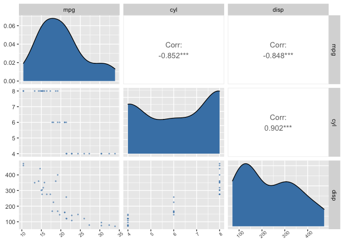

The goal of projectPackage is to provide simplified functions to achieve the goal of data preprocessing for exploratory data analyses. The projectPackage makes the following steps quick and easy:
- Removing certain columns from a data set
- Creating a recipe
- Creating a ggpairs correlation plot
Installation
You can install the development version of projectPackage from Github like so:
# install.packages("devtools")
devtools::install_github("DSCI-310-Group-11-package")Usage
Often when you work with large data sets, there will be columns that are redundant or not of interest. It can get monotonous writing and seeing the same lines of code over and over again across different projects, in that case, you can use projectPackage::data_cleaning()to drop those columns. This function differs from select and subsetin that it is more narrowed down to a specific usage which can be useful for learners who wish to work with simpler and straightforward functions.
tidy_data <- data_cleaning(mtcars, c("drat","vs"))
head(tidy_data)
#> mpg cyl disp hp wt qsec am gear carb
#> Mazda RX4 21.0 6 160 110 2.620 16.46 1 4 4
#> Mazda RX4 Wag 21.0 6 160 110 2.875 17.02 1 4 4
#> Datsun 710 22.8 4 108 93 2.320 18.61 1 4 1
#> Hornet 4 Drive 21.4 6 258 110 3.215 19.44 0 3 1
#> Hornet Sportabout 18.7 8 360 175 3.440 17.02 0 3 2
#> Valiant 18.1 6 225 105 3.460 20.22 0 3 1And if we want to create a recipe, we can easily accomplish that using projectPackage::recipe_scale_center(). This function scales and centers all the predictor variables as well as building a new model specification and recipe for the analysis. Therefore, the function saves tons of time as it minimizes the amount of coding that you have to write.
recipe_scale_center(mtcars, mpg ~ hp)
#> Recipe
#>
#> Inputs:
#>
#> role #variables
#> outcome 1
#> predictor 1
#>
#> Operations:
#>
#> Centering for recipes::all_predictors()
#> Scaling for recipes::all_predictors()Lastly, if you want to create a ggpairs correlation matrix plot, this package also covers that! However, this function differs from the function ggpairs() in that it adds additional aesthetics which makes it prettier and more readable.
correlation_graph(mtcars[1:3])
#> Registered S3 method overwritten by 'GGally':
#> method from
#> +.gg ggplot2